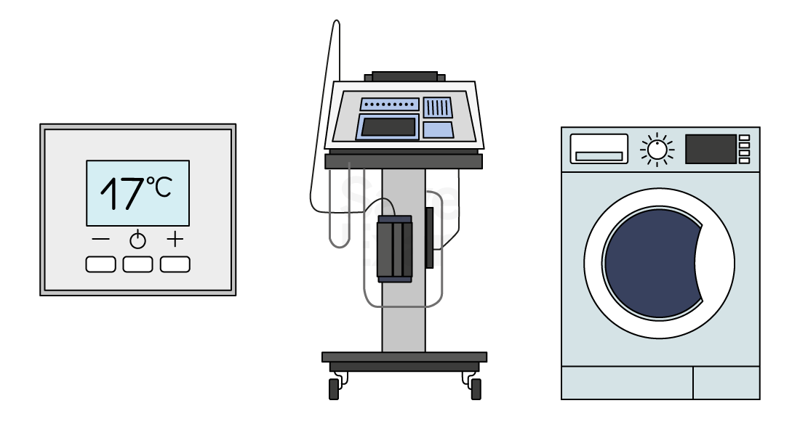
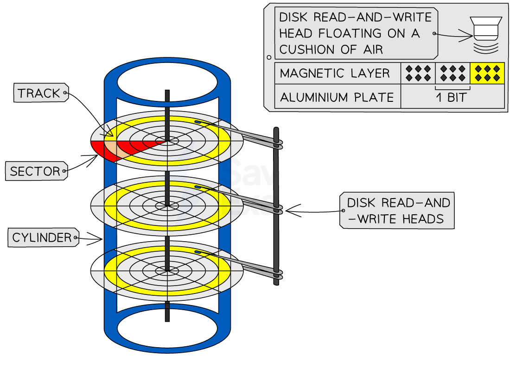
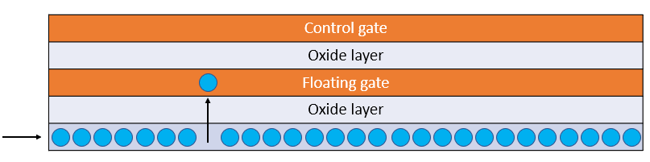

System Components
Input/output devices
What is an input device?
- Input devices are hardware components that allow users to interact with a computer system
- They enable the user to input data or commands into the system, which the computer then processes to produce output
Types of input devices
| Name of device | Description |
|---|---|
| Keyboard | The most common input device. It allows users to input text and commands by pressing keys |
| Mouse | Allows users to navigate the computer screen, click on items, and perform other functions |
| Touchscreen | Found on smartphones, tablets, and some computers, touchscreens allow users to interact with the device by touching the screen |
| Microphone | Captures audio input, which can be used for voice commands, recording audio, or video conferencing |
| Webcam | Captures video input, often used for video conferencing or recording videos |
| Scanner | Digitises physical documents or images, converting them into a format that the computer can process |
| Game Controller | Used primarily for video games, these devices allow users to control game characters and interact with the gaming environment |
| Graphics Tablet | Allows artists and designers to draw or sketch directly onto a computer. It’s particularly useful for graphic design, 3D modelling, and other visual creative tasks |
| Biometric Devices | These devices, such as fingerprint scanners or facial recognition systems, are used for security purposes to verify a user’s identity |
| Barcode Reader | Scans barcodes, typically used in retail and inventory management |
| Joystick | Often used for computer games, especially flight simulators. It allows the user to control movement more fluidly than with a keyboard or mouse |
What is an output device?
- Output devices are hardware components that receive information from a computer system and present it to the user in a comprehensible form
- They enable the computer to communicate the results of processed data or commands
Types of output devices
| Name of device | Description |
|---|---|
| Monitor | This is the most common output device. It displays visual output from the computer, including text, images, and videos |
| Printer | Produces a hard copy of digital documents or images. There are various types of printers, including inkjet, laser, and 3D printers |
| Speakers | Output audio from the computer, such as music, sound effects, or voice |
| Headphones | Similar to speakers, headphones output audio directly to the user, providing a more personal and potentially immersive experience |
| Projector | Projects the computer’s display onto a large screen or wall, useful for presentations or movie viewing |
| Braille Display | This specialised device outputs information in Braille, allowing visually impaired users to read text from the computer |
| Plotter | Used for printing large, high-quality diagrams and designs, often used in engineering or architecture |
| Virtual Reality (VR) Headset | Provides an immersive visual and audio output, primarily used for gaming and virtual simulations |
| Computer-Controlled Machinery | In manufacturing or robotics, computers often output commands directly to machinery to control their operation |
Choosing the right device
When recommending a device for a specific situation, consider the following factors:
- User Needs
- What tasks will the user be performing? A graphic designer might need a graphics tablet, while a data entry clerk might need a keyboard with a number pad
- User Skills
- Is the user comfortable with the device? A touch screen might be more intuitive for some users, while others might prefer a mouse and keyboard
- Environment
- Where will the device be used? A wireless mouse might be suitable for a clutter-free office, while a wired mouse might be better for a public computer lab to prevent theft
- Cost
- Higher-end devices often have more features but are also more expensive. Consider the budget and whether the extra features are worth the cost
Primary storage
What is primary memory?
- Primary memory is memory directly accessible by the CPU
- Has much faster access times than secondary storage
- This speeds up operations like the Fetch-Execute Cycle
- Stores data and instructions the CPU needs while the computer is on and running
- Acts as short-term, working memory
- Found in components like:
- RAM (Random Access Memory) – directly connected to the CPU
- Cache and Registers – built into the CPU for even faster access
- ROM (Read-only Memory) store simple program to boot-up the hardware and the Operating System.
- Example: Bootstrap, Firmware, Bootloader
- Because it’s fast, it’s also more expensive, so we use less of it
- Example: RAM = 16–32 GB
- Secondary storage (like HDDs) = 1–2 TB or more
- View more detailed information on the different types of memory
Secondary storage
What is secondary storage?
- Secondary storage provides permanent data storage
- Hardware components that retain digital data within a computer system
- They provide a means of storing, accessing, and retrieving data, which can include software applications, documents, images, videos, and more
- There are 3 types of storage:
- Magnetic
- Optical
- Solid state
| Type of storage | Description | Benefits | Drawbacks |
|---|---|---|---|
| Magnetic (e.g., Hard Disk Drives, Magnetic Tape Drives) | Store data by magnetising particles on a disk or tape | High storage capacity; relatively low cost per gigabyte; suitable for long-term storage and backup | Slower read/write speeds compared to other types; susceptible to physical damage; moving parts can wear out over time |
| Optical (e.g., CDs, DVDs, Blu-ray Discs) | Store data using a laser to burn pits into the surface of the disc | Durable and relatively immune to environmental conditions; easy to transport; suitable for distributing software, music, or movies | Lower storage capacity compared to other types; slower read/write speeds; can be easily scratched or damaged |
| Solid state (e.g., Solid-State Drives, USB Flash Drives) | Store data in flash memory cells | Fast read/write speeds; no moving parts, so less likely to fail due to physical shock; silent operation | Higher cost per gigabyte; flash memory cells can wear out after a certain number of write cycles |
Here are some of the devices commonly used for storage:
| Name of device | Type of device | Typical storage capacity | Affordability | Portability | Durability |
|---|---|---|---|---|---|
| Hard Disk Drive (HDD) | Magnetic | 500GB - 2TB (consumer-grade) | Low cost per GB | Low (especially for internal HDDs) | Moderate (susceptible to damage from shocks or falls due to moving parts) |
| Solid-State Drive (SSD) | Flash | 120GB - 4TB (consumer-grade) | High cost per GB | High (especially for external SSDs) | High (no moving parts, less susceptible to physical shock) |
| USB Flash Drive | Flash | 8GB - 256GB (common sizes) | Moderate cost per GB | Very High (small and lightweight) | Moderate (can withstand casual handling, but can be lost or damaged if not cared for) |
| CD/DVD/Blu-ray Disc | Optical | CD: 700MB, DVD: 4.7GB - 9GB, Blu-ray: 25GB - 50GB | Low cost per disc | High (thin and lightweight) | Low (can be scratched or damaged easily) |
Choosing the right storage device
When recommending a storage device for a specific situation, consider the following factors:
- Storage needs
- How much data does the user need to store? A user with large amounts of data might need a high-capacity HDD, while a user who only needs to store a few documents might be fine with a USB flash drive
- Performance needs
- Does the user need fast access to their data? An SSD might be best for tasks that require high-speed data access, like video editing or gaming
- Portability
- Does the user need to transport the data? USB flash drives and external HDDs or SSDs are portable and can be used to transfer data between different computers
- Cost
- Higher-capacity and faster storage devices are generally more expensive
- Consider the user’s budget and whether their storage and performance needs justify the extra cost
Embedded systems
What is an embedded system?
- An embedded system is a computer system which is used to perform a dedicated function, inside a larger mechanical unit
- Examples of embedded systems include
- Heating thermostats
- Hospital equipment
- Washing machines
- Dishwashers
- Coffee machines
- Satellite navigation systems
- Factory equipment
- Security systems
- Traffic lights

Benefits and drawbacks of embedded systems
| Benefits | Drawbacks |
|---|---|
| Small and compact – easy to fit into dedicated devices | Limited functionality – only performs specific tasks |
| Low power consumption – efficient and cost-effective | Hard to upgrade or repair – often built into the device |
| Fast and reliable – designed for quick, repetitive tasks | Limited memory and processing power |
| Cheaper to produce – uses minimal hardware | Not flexible – can’t easily be reprogrammed for other tasks |
| Works in real-time – ideal for time-sensitive operations (e.g. alarms) | May be less secure – limited protection if connected to other systems |
Hardware Devices
Input devices
| Device | Pricipal operations | Additional information |
|---|---|---|
| Microphone | - Converts sound waves into electrical signals | - Allows users to record voice or send audio into a computer - Dynamic microphones – good for loud environments (e.g. concerts) - Condenser microphones – more sensitive and accurate, used in studios |
| Touchscreen | - Detects a user’s touch and converts it into an input command | - Capacitive – responds to electrical charge from your finger (used in smartphones, tablets) - Resistive – responds to pressure (used in ATMs, tills) - First used in ATMs and information kiosks, now used in smartphones, tablets, laptops, smart displays - Popular for direct, easy interaction and improved accessibility |
Output devices
| Device | Principal operations | Additional information |
|---|---|---|
| Laser printer | - Laser beam draws the image of the page onto a photosensitive drum, changing its electric charge - Toner is transferred from drum to paper |
- Toner sticks to the drum – toner powder is attracted to charged areas matching text/image shape - Fusing – paper passes through hot rollers, melting toner onto paper so it doesn’t smudge |
| 3D printer | - Builds objects layer by layer from the bottom up - Uses various materials such as thermoplastics, resins, and metals - Allows high customisation and rapid prototyping |
- Handles complex shapes traditional methods can’t make easily - FDM – melts plastic and builds in layers, SLA – uses light to harden liquid resin - Used in healthcare (prosthetics), automotive/aerospace (custom parts) - Can be slow for large/detailed objects, some methods need costly specialist materials |
| Speakers | - Convert electrical signals into sound waves | - Range from basic laptop speakers to high-end multi-driver home theatre systems - Found in phones, laptops, studios, smart devices, home theatres - Improved with digital sound processing and miniaturised components - Support voice commands, calls, and multimedia playback |
| Virtual reality headset | - Creates a fully immersive 360° digital environment - Lets users look around and interact with the virtual world |
- Uses head tracking, motion sensors, and stereoscopic displays for 3D vision - Uses – gaming, education/training, architecture/design, medical/therapy - Challenges – expensive hardware, possible eye strain or motion sickness, time-intensive content creation |
Storage devices
| Device | Principal operations | Additional information |
|---|---|---|
| Magnetic hard disk | - Multiple metal platters coated with magnetic material store data as magnetised iron particles (0s and 1s) - Platters spin at high speed (typically 5400–7200 RPM) - Data read/written using electromagnets |
- Platters divided into concentric tracks and wedge-shaped sectors, forming track sectors - Read/write arm, controlled by an actuator, positions the head over the correct track sector - Reliable but mechanical – can be slower and more prone to damage than SSDs |


| Device | Principal operations | Additional information |
|---|---|---|
| Solid state (flash) memory | - Stores data in cells using transistors that act as switches - Uses NAND or NOR gates to control flow of electrons - Writing: high voltage pushes electrons onto floating gate - Faster and more durable than magnetic drives |
- Common examples: SSDs, USB flash drives - Each cell contains a control gate (controls current) and a floating gate (stores charge) - Erasing: reverse high voltage pulls electrons off floating gate - No moving parts – better shock resistance |

| Device | Principal operations | Additional information |
|---|---|---|
| Optical disc reader/writer | - Uses a laser to read and/or write data on optical discs - Writing: laser burns pits and lands onto the disc surface - Arm moves the laser across the disc - Blu-rays store the most, CDs the least |
- Examples: CD, DVD, Blu-ray - Reading: laser scans surface; changes in reflection indicate 0s and 1s - CD-R = write once, CD-RW/DVD-RW = rewriteable - Slower than magnetic/solid-state storage but good for archival |
Use of Buffers
Buffers
What is a buffer?
- A buffer is a temporary storage area that holds data while it is being transferred between two devices or processes
- Buffers help manage speed differences between components, ensuring smooth data flow
How buffers work
- Data is collected in the buffer before being processed or output
- When the receiving device is ready, it takes data from the buffer
- This prevents data loss and allows devices with different speeds to communicate effectively
Examples
| Buffer | Description |
|---|---|
| Keyboard | Stores keystrokes until the processor is ready to handle them |
| Holds print jobs so the processor can move on while the printer outputs the data at its own speed | |
| Video | Stores a portion of data before playback to prevent pauses caused by network delays |
Key points
- Buffers are used to synchronise data transfer between fast and slow devices
- They improve efficiency and avoid bottlenecks
- Without buffers, data could be lost or delayed if one device is not ready to process information
Memory Types
RAM vs ROM
What is RAM?
- RAM (Random Access Memory) is primary storage that is directly connected to the CPU and holds the data and instructions that are currently in use
- RAM is volatile which means the contents of RAM are lost when the power is turned off
- For the CPU to access the data and instructions they must be copied from secondary storage
- RAM is very fast working memory, much faster than secondary storage
- RAM is read/write which means data can be read from and written to
- In comparison to ROM, it has a much larger capacity
What is ROM?
- ROM (Read Only Memory) is primary storage that holds the first instructions a computer needs to start up (Bootstrap)
- ROM contains the BIOS (Basic Input Output System)
- ROM is a small memory chip located on the computers motherboard
- ROM is fast memory, much faster than secondary storage but slower than RAM
- ROM is non-volatile which means the contents of ROM are not lost when the power is turned off
- ROM is read only which means data can only be read from
- In comparison to RAM, it has a much smaller capacity
Differences between RAM & ROM
| ure | RAM | ROM |
|---|---|---|
| Speed | Very fast | Fast (slower than RAM) |
| Capacity | Gigabytes (GB) | Megabytes (MB) |
| Stores | Programs and data in use | Bootstrap (start-up instructions) |
| Read/Write | Read & write | Read only |
| Volatile/Non-volatile | Volatile | Non-volatile |
SRAM vs DRAM
What is SRAM?
- SRAM (Static RAM) is a form of RAM that keeps data as long as power is on
- SRAM is made from flip-flops so there is no need for constant refreshing
- SRAM is used in places where speed is more important than storage size
- An example of where SRAM is used is:
- Cache memory, where quick access to data is most important
- Very fast – faster than DRAM
- Uses less power, good for low-power devices
- Expensive to make
- Takes up more space – lower storage capacity compared to DRAM
What is DRAM?
- DRAM (Dynamic RAM) is a form of RAM that stores each bit in a tiny capacitor
- DRAM needs constant refreshing to keep the data
- DRAM is commonly used as:
- Main memory (RAM), where larger amounts of cheaper storage is required
- Cheaper to produce than SRAM
- Higher capacity – can fit more memory in less space
- Slower than SRAM, needs time to refresh data
- Uses more power, especially during refreshing cycles
PROM vs EPROM vs EEPROM
What is PROM, EPROM & EEPROM?
- PROM, EPROM and EEPROM are all types of ROM that are programmed and reprogrammed in different ways
- Each type has a specific application in difference devices
| Feature | PROM | EPROM | EEPROM |
|---|---|---|---|
| Can be reprogrammed? | No – programmed once only | Yes – can be erased and rewritten | Yes – can be erased and rewritten |
| Erased using | Cannot be erased | UV light | Electric voltage |
| Must be removed from device? | No | Yes – must be removed from the device | No – can be erased in place |
| Erased all at once? | Not applicable | Yes – entire chip is erased | No – specific parts can be erased |
| Common use | Permanent firmware | Reprogrammable chip development | Flash memory, BIOS chips |
| Examples | Remote controls, basic calculators, early model washing machines | Arcade machines (older models) Early games consoles |
BIOS chips in computers, Smart cards, remote key fobs, flash memory like USB sticks and SSDs |
Monitoring vs control
Monitoring systems
- A monitoring system is used to collect data continuously through observation
- It works by passively gathering data
- It does not interact with or change the environment
- The system does not take action based on the data collected
- Designed for high accuracy using precise sensors and measurements
- Examples of monitoring systems include:
- Weather stations
- Patient monitoring in hospitals
Weather stations
- Collect data like temperature, wind speed, humidity, and rainfall
- Used by meteorologists to observe and predict weather patterns
- Data is collected 24/7 but the system does not react or change anything
Patient monitoring
- Tracks heart rate, oxygen levels, and blood pressure in real-time
- Alerts medical staff if readings go outside safe ranges
- The system itself just records and displays data, it doesn’t directly treat the patient
Control systems
- A control system is used to automatically manage or adjust a process based on data collected from sensors
- It works by monitoring input, then taking action if certain conditions are met
- Unlike monitoring systems, control systems do interact with the environment
- They are designed to keep systems stable, safe, or working efficiently without human input
- Examples of control systems include:
- Central heating system
- Automatic irrigation system
Central heating system
- Monitors room temperature using a thermostat
- If the temperature drops below the set level, the boiler is switched on
- Once the target temperature is reached, the system turns the heating off automatically
- The system constantly checks and adjusts to maintain the desired temperature
Automatic irrigation system
- Monitors soil moisture levels in farmland or gardens
- If moisture drops too low, it activates sprinklers to water the plants
- Once the soil reaches the correct level, the system turns off the water supply
- Ensures plants are watered efficiently without wasting resources
- Actuators are output devices in a control system that carry out actions based on data from sensors
- Examples include motors, heaters, valves, and pumps
Use of sensors
What are sensors?
- Sensors are input devices
- They measure a physical property of their environment such as light levels, temperature or movement
- Sensors can be used for both monitoring and control systems
- A process where outputs are recycled and used as inputs, creating a continuous cycle is called a feedback loop
| Sensor type | What it measures | Typical use |
|---|---|---|
| Acoustic | Sound levels | To detect changes in sound levels of industrial machinery To monitor noise pollution In security system to detect suspicious sounds |
| Accelerometer | Acceleration rate, tilt, vibration | Detecting sudden changes in vehicle movement and deploy safety features if needed In mobile phones to detect orientation of the device |
| Flow | Rate of gas, liquid or powder flow | Detect changes in the flow through pipes in water system |
| Gas | Presence of a gas e.g. carbon monoxide | Detect levels of gas in confined spaces Detect gas levels when fixing gas leaks |
| Humidity | Levels of water vapour | Monitor humidity in greenhouses |
| Infra-red | Detecting motion or a heat source | Security systems detecting intruders who break the beam Measures heat radiation of objects - used by emergency services to detect people |
| Level | Liquid levels | Detects levels of petrol in a car tank Detect levels of water in a water tank Detect a drop in water levels due to a leak |
| Light | Light levels | Automatically switching on lights when it gets dark (street lights, headlights) |
| Magnetic field | Presence and strength | Anti-lock braking system Monitoring rotating machinery such as turbines |
| Moisture | Presence and levels of moisture | Monitoring moisture in the soil Monitoring dampness in buildings |
| pH | Acidity or alkaline | Monitoring soil to ensure optimum growing conditions Monitor ph levels in chemical processes |
| Pressure | Gas, liquid or physical pressure | Monitoring tyre pressure Monitoring pressure in pipes during the manufacturing process |
| Proximity | Distance | Monitoring the position of objects in robotics Used in safety systems to prevent objects from colliding |
| Temperature | Temperature in Celsius, Fahrenheit or Kelvin | Used to maintain temperature in swimming pools Used to control temperature in chemical processes |
Feedback loops
What is a feedback loop?
- A feedback loop is when a control system uses its output to influence its next input
- Allows the system to automatically adjust and stay within set conditions
- Feedback allows the system to check if it’s working as expected
- The output affects the next input, helping the system make adjustments
- This means the system can automatically respond to changes in its environment
- Helps the system stay within set limits or target values (e.g. temperature, moisture)
- Makes the system more accurate and efficient without needing human control
Example: Central heating system
- The system uses a thermostat to monitor the room temperature
- If the room gets too cold, the system turns the heating on
- Once the room reaches the set temperature, the system turns the heating off
- This process uses feedback:
- The output (room temperature) affects the input (whether heating is needed)
- Feedback ensures the system automatically adjusts to keep the room at the right temperature
- No need for manual control as the system self-corrects using feedback
Logic gates
What is a logic gate?
- A logic gate is a visual way of representing a Boolean expression
- The logic gates covered in this course are:
- AND
- OR
- NOT
- XOR
- NAND
- NOR
AND
| Expression operator | Circuit symbol | Function |
|---|---|---|
| (A AND B) | Returns TRUE only if both inputs are TRUE TRUE AND TRUE = TRUE Otherwise = FALSE |
OR
| Expression operator | Circuit symbol | Function |
|---|---|---|
| (A OR B) | Returns TRUE if either input is TRUE TRUE OR FALSE = TRUE FALSE OR FALSE = FALSE |
NOT
| Expression operator | Circuit symbol | Function |
|---|---|---|
| (NOT A) | Reverses the input value NOT TRUE = FALSE NOT FALSE = TRUE |
XOR (exclusive OR)
| Expression operator | Circuit symbol | Function |
|---|---|---|
| (A XOR B) | Returns TRUE if either input is TRUE but NOT both TRUE OR FALSE = TRUE FALSE OR FALSE = FALSE TRUE OR TRUE = FALSE |
NAND (not and)
| Expression operator | Circuit symbol | Function |
|---|---|---|
| (A NAND B) | Returns TRUE if either or both inputs are FALSE TRUE OR FALSE = TRUE FALSE OR FALSE = TRUE TRUE OR TRUE = FALSE |
NOR (not OR)
| Expression operator | Circuit symbol | Function |
|---|---|---|
| (A NOR B) | Returns TRUE if both inputs are FALSE TRUE OR FALSE = FALSE FALSE OR FALSE = TRUE TRUE OR TRUE = FALSE |
Truth tables
What is a truth table?
- A truth table is a tool used in logic and computer science to visualise the results of Boolean expressions
- They represent all possible inputs and the associated outputs for a given Boolean expression
AND
Circuit symbol | Truth Table | |||||||||||||||
|---|---|---|---|---|---|---|---|---|---|---|---|---|---|---|---|---|
|
OR
Circuit symbol | Truth Table | |||||||||||||||
|---|---|---|---|---|---|---|---|---|---|---|---|---|---|---|---|---|
|
NOT
Circuit symbol | Truth Table | ||||||
|---|---|---|---|---|---|---|---|
|
XOR (exclusive)
Circuit symbol | Truth Table | |||||||||||||||
|---|---|---|---|---|---|---|---|---|---|---|---|---|---|---|---|---|
|
NAND (not and)
Circuit symbol | Truth Table | |||||||||||||||
|---|---|---|---|---|---|---|---|---|---|---|---|---|---|---|---|---|
|
NOR (not or)
Circuit symbol | Truth Table | |||||||||||||||
|---|---|---|---|---|---|---|---|---|---|---|---|---|---|---|---|---|
|